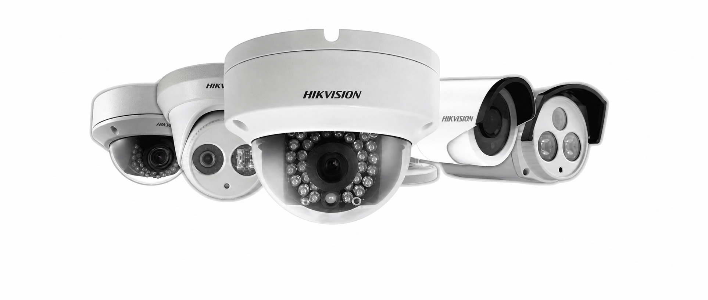
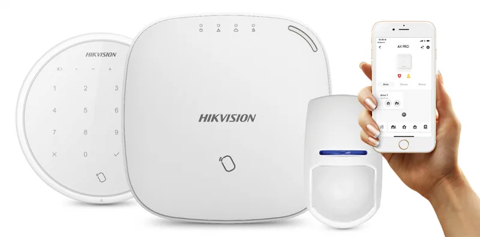
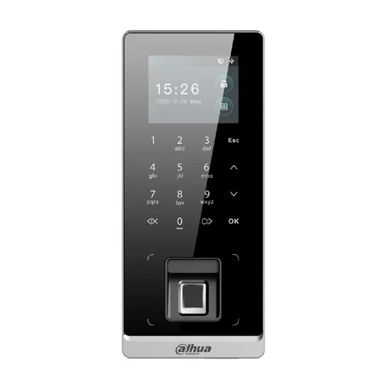
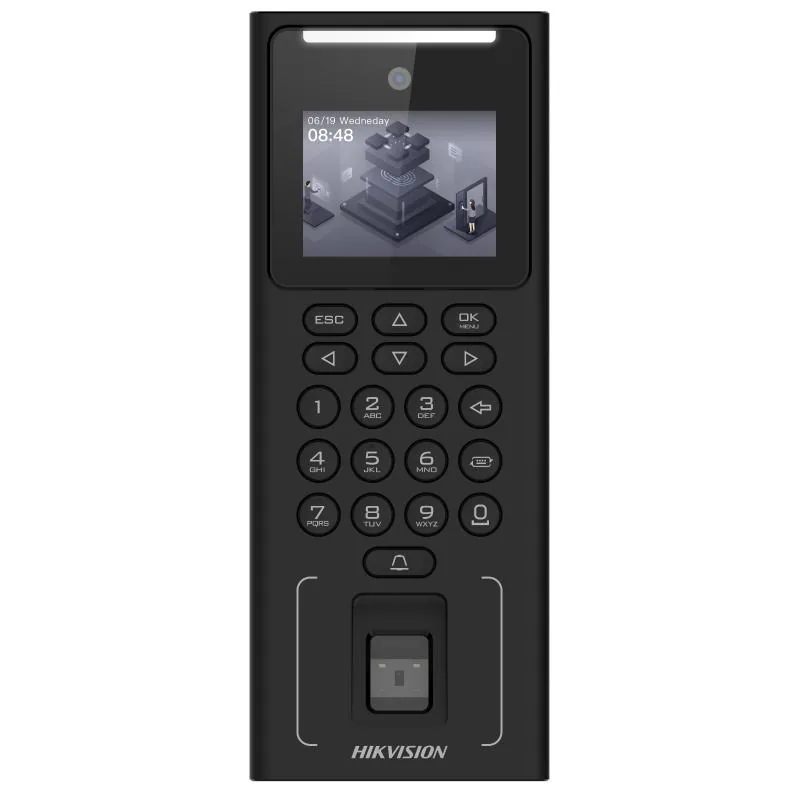
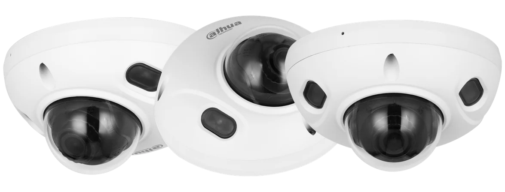
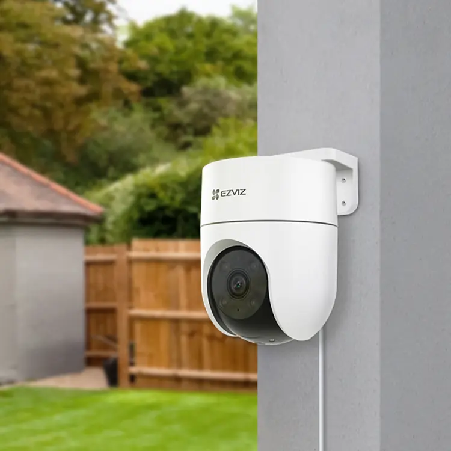
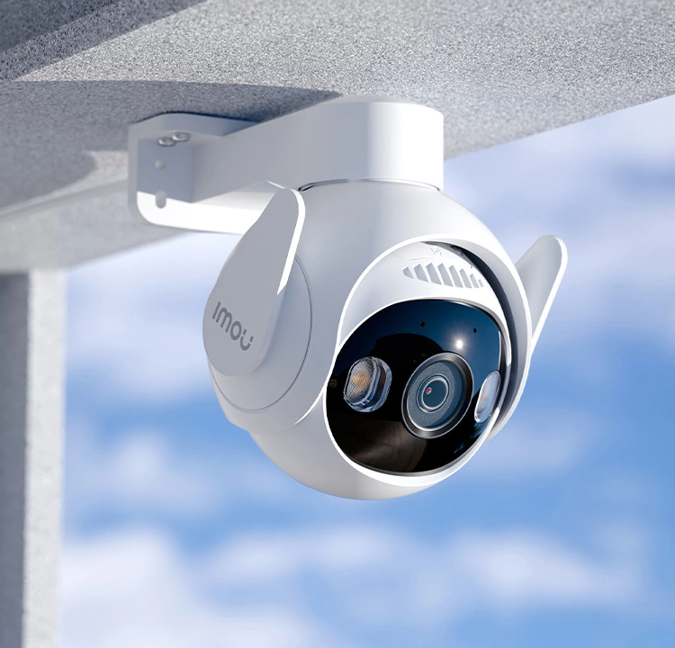
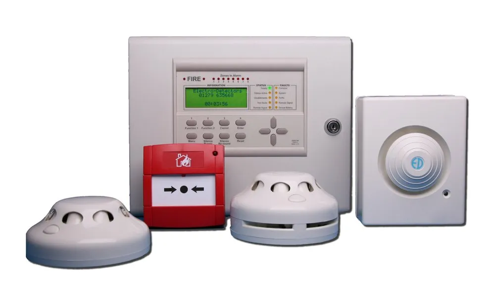
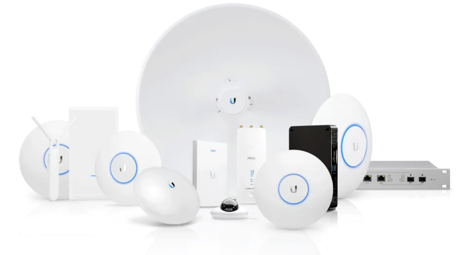

Redes e infraestructura
Redes WiFi
Cobertura
Cableado
Segmentación
Invitados
Conectividad
Enlaces
Monitoreo
Lo importante no es la marca sino la cobertura real, la estabilidad y la integración entre equipos. Elegimos después de revisar el lugar, el uso y el presupuesto.
Revisamos el caso antes de recomendar equipos. Estas referencias muestran el tipo de soluciones con las que trabajamos habitualmente; la elección final depende del lugar, el uso real y el presupuesto disponible.

Para cubrir accesos, perímetro o circulación.

Aperturas, movimiento y avisos remotos.

Registrar ingresos y permisos.

Huella o PIN.

Revisar eventos sin recorridos.

Instalación simple y gradual.

Seguimiento visual.

Detección, aviso, señalización.

Cobertura, estabilidad, soporte.
Las imágenes y marcas mostradas pertenecen a sus respectivos fabricantes. Se utilizan como referencia del tipo de equipos con los que trabajamos. Jesareko no es representante oficial ni distribuidor exclusivo de ninguna de estas marcas.